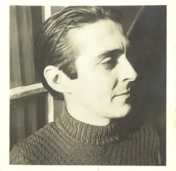

Фелікс Піта Родрігес (ісп. Felix Pita Rodriguez; 18 лютого 1909, Бехукаль, Маябеке — 19 жовтня 1990, Гавана, Куба) — кубинський письменник, поет, есеїст, журналіст та літературний критик. Лауреат Національної літературної премії Куби (1985).
Жив в Іспанії, Франції, Аргентині, Венесуелі та інших країнах. Літературну діяльність розпочав у 1920-ті роки, як поет-авангардист, пізніше перейшов на позиції соціальної поезії (поема "Привіт товаришеві селянинові", 1927).
Був віце-президентом Національної спілки письменників Куби, президентом його літературної секції, членом журі основних національних та міжнародних конкурсів, таких як Премія Будинку Америк та премії, що спонсорується Національною спілкою кубинських письменників (UNEAC). Відомий також оповіданнями ліричного характеру. Автору належать збірки оповідань "Сан Абуль де Монтекальядо" (1945), "Тобіас" (1955), збірки поезій "Вогненний кінь" (1948), "Хроніка. Гаслова поезія" (1961) та ін. Автор книг "В'єтнам. Нотатки із щоденника" (1967), "Діти В'єтнаму" (1968).